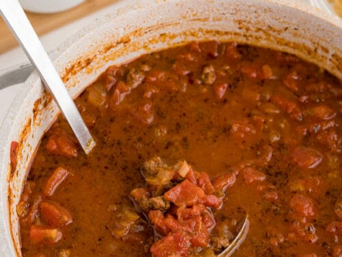

Six Can Soup

Description
This is an incredibly easy-to-make beef taco soup.
I learned this recipe from a cool mom who had learned it from someone else.
Ingredients
- 1 can chili with no beans
- 1 can whole kernel corn
- 1 can tomato soup
- 1 can vegetable soup
- 1 can stewed tomatoes or diced tomatoes
- 1 can diced tomatoes with green chilies
- Some grated chees: mild cheddar, Mexican blend, or the like
- 1 bag of Fritos
All cans are standard size.
For a milder variant of this soup, halve or omit the diced tomatoes
with green chilies.
Steps
-
Empty contents of all cans into a soup pot and mix together.
Do not drain or reconstitute anything; just dump them in.
-
Heat through on medium to high temperature, stirring occasionally.
Remove from heat.
-
Serve as follows: put a handful of Fritos in each bowl.
Pour soup on the Fritos, and then sprinkle grated cheese on top.
I recommend milk to drink with this soup.